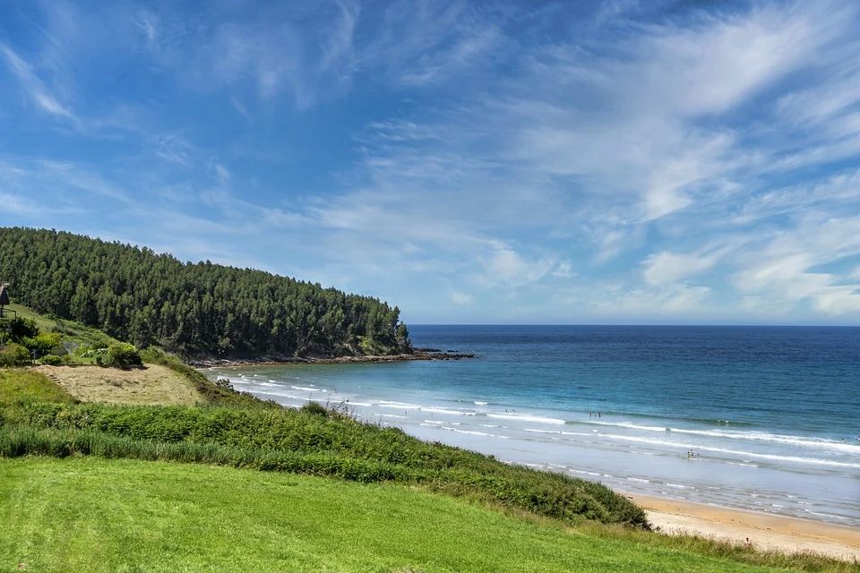
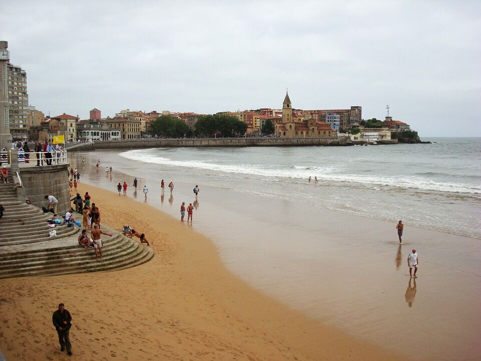
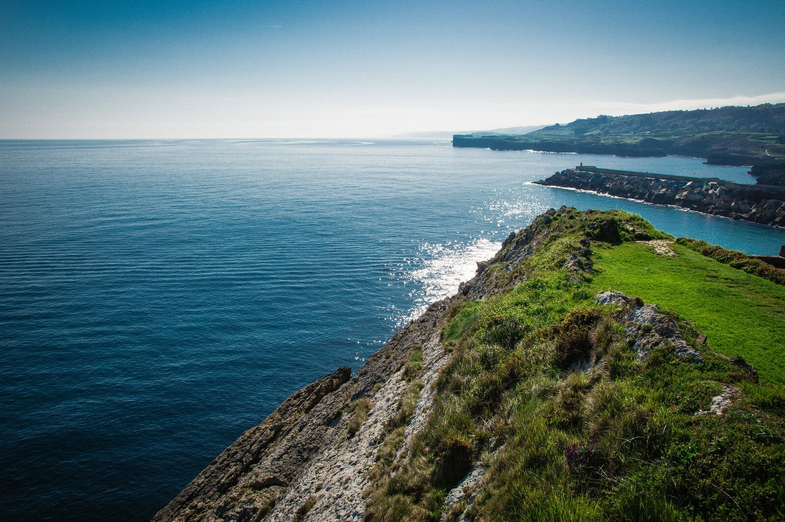

Costa Verde ("Green Coast") is the name given to the coastline of Asturias, in northern Spain, along the
Cantabrian Sea. It covers the old maritime province of Gijón, created in 1845, together with Avilés,
created in 2007.

The Costa Verde
With 345 km of shoreline it is the fifth longest coast in Spain, and one of the best preserved in the
country.
Geography
Most of the coast sits on a rasa: a flat shelf that runs from the cliff edge to the first slopes
of the mountains. It is an old sea floor, once shaped by the waves and now raised several metres above the
water, in places more than 100. The eastern coast is a large limestone massif, which explains its rugged
rock formations.
The name comes from the fields, which stay green all year round, right down to the beaches. Steep cliffs
alternate with long sandy beaches and small coves.
Cape Peñas,
the northernmost point of the region, splits the coast into its eastern and western halves; its cliffs,
over a hundred metres high in places, are a protected landscape.
Some of the best-known beaches are Rodiles (Villaviciosa), La Isla (Colunga), Torimbia (Llanes),
Arnao (Castrillón) and San Lorenzo (Gijón).
Gulpiyuri beach, in Llanes, is unique: it lies inland, with no opening to the sea, which reaches it
through a small underground cave beneath the cliff. It was declared a natural monument in 2001.

San Lorenzo beach
Activities
The coastal towns keep their fishing traditions alive. Cudillero, Gijón, Llanes, Ribadesella, Luarca,
Luanco and Candás are among the most charming.

Llanes beach
Wild and with big waves, the Costa Verde is a popular destination for surfing and windsurfing; Tapia de
Casariego is one of the favourite spots.